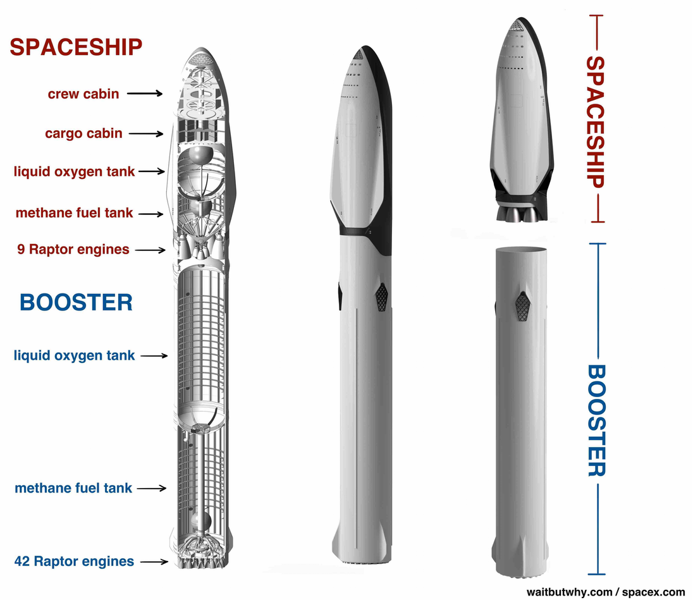

What is this Book called Gen-Z Bible why is it special?
September 1, 2024 by Robert
I guess many of you guys have heard or seen silly reels abot Gen-Z bible and it have been a trend on IG and many other platforms and you can ask yourself what it is that it is so special?
Why this shit is so daring and I did take my gaddamn time to write about it?
The answer is very easy one as the name its self says it is a Generation-Z. not the other old school book your grand parents usedto read which is this blood sucking hard to read, OMG this one is so super cool I can assure you that, cool lines the format everything of it is well assembled.
How did all of this shit come out?
It all start with a recent adaptation of the Bible into Gen Z slang, first gained attention in 2023, primarily on TikTok(guess if u are a TikTok user you already know about this) and as people have noticed it's capability to getting attention they translated the whole Goddamn book into a new stunning book we now call the Gen-Z Bible.
Just taste this one!
Forget stuffy verses-now you’ve got lines like, “God saw it and was like, ‘bet, it’s good’” (Genesis 1:31),bringing ancient wisdom into today’s slang. It’s got everything from Samson “yeetinghis enemies” to Mary getting the GOAT status like, “Bruh, you’re straight up blessed among women, and your baby is GOAT!” (Luke 1:42).
And just wait: “Adam looked at Eve and was like, ‘bruh, she’s fire’” (Genesis 2:23). Now THAT’s a mood! Ready to catch the holy vibes in your language? The Gen Z Bible is the glow-up you never knew you needed.📖✨
Did you know that you can block those annoying ads you see when using internet!
Tired of annoying ads? we got you covered. I know from my browsing expreince that it is frustrating to be bombarded by ads while you are using a certain website and it become worse when you are in desprate need of the service and you keep being bombarded by the motherf*cking ads, right? I know you might be asking yourself is it possible? Yeah ofcourse it is possible it isn't just a thing someone who have just made the internet have put there which can not be changed like the beauty of Queen Yolo nope! it can be changed and here is how you can have safe browsing google and other website owner's doesn't want you to have because they make unfair money from it in one way or another.
Here are steps to follow inorder to have safe browsing free of ads: >On Mobile phones:
>On Computer:
Go to search bar on your PC type in "control panel"
Open It and navigate to "View network status and tasks"
Then look in the left corner of that page where there is "Change adapter settings" and click on it.
Then right click on the network you are using and click on propertis.
scroll down until you locate Ip v4... and click on it
then click on "Properties"and navigate to "use the following DNS server addresses:" then type the following addresses: Preferred address: 94.140.14.15 Alternate address: 94.140.15.16
Many arrest this month. What is there in jail making many guys to go there?
As you have heard or seen many influential people are being arrested and the question is are they promoting jails, have side businesses in jail , or may be we don't know what's popping they are giving out free s** guys(Johnny& Mia)/ chocolates in jails or may be i'm mistaken there are others reasons they competing to go there!
For the first time out of no where this guy called Fata kumavuta get arrested because of his stupid mouth and fingers which do not know what to type and speak in public and on social media and I don't quite believe this because there is no way one get arrested because of his stupid mouth but from what we get from RIB is that his charged of inciting division, using offensive language, and harassing individuals through social media platforms(Especially this guys The Ben and Meddy ) In light of this incident, Dr. Murangira urged social media users to utilize these platforms responsibly and in accordance with the law. “The government invests significant resources in infrastructure to ensure access to fast internet, as it aims for social media to be a tool for positive engagement, free from criminal activities,” he stated. And I think me too i don't have any stupid comment left because I don't want my f*cking good hand cut off
Then after that as if that case of Fata kumavuta was not enough this girl then overnight drove her car and crush into houses." A beauty queen in Rwanda has been arrested for drink-driving and driving without a licence.
Police said Divine Muheto, who won the most recent Miss Rwanda beauty pageant, had damaged "infrastructure" and then fled the scene. The statement does not say whether anybody was hurt in the incident.
It is not the first time the 21-year-old has driven under the influence of alcohol, police in the East African country added." as we get it from bbc.com Then what else are we duelling on I think this isn't real it's juust a plank! but spare I'm just kidding I did mean nothing. I don't want to be put on RIB waiting list please!
⚠ First quick disclaimer the title above it's not my type to use those abusing names it's up to Elon Musk who have said so in the interview because they have not yet decided name.
How come did Elon musk decided to build big rocket like this? as Elon himself told waitbutwhy.com(which I recommend you to use for top rated stories explained clearly) he wants to make the journey to Mars be real not dreams Why Mars? Venus is a dick, with its lead-melting temperatures, its crushing atmospheric pressure, and its unbearable winds. Same deal on Mercury.
Jupiter, Saturn, Uranus, and Neptune are just huge balls of gas pretending to be planets.
Certain moons of Jupiter and Saturn are possibly habitable, but they’re farther away and colder and darker than Mars, so why would we do that. Pluto is even farther and colder and darker. Stop asking me about Pluto. That leaves Mars. If Mars were a place on Earth, it’s somewhere no one would want to go.It’s cold but not that cold. It’s kind of dark but not that much darker than Earth. It’s far but not that far. Its day is almost the same length as ours, which is nice for us and hugely helpful for growing Earthly vegetation. But going to Mars it is just that easy if you do not look in the window of finance or budget to go to the mars "Last time the US Congress checked with NASA, the cost to send a five-person crew to Mars was $50 billion. $10 billion a person. Elon thinks that to make journey to Mars affordable, it needs to cost $500,000 a person. 1/20,000 of the current cost. ;"That’s like looking at the car industry and saying, “Right now a new Honda costs around $20,000. To make this a viable industry, we need to get the cost of a new car down to $1. So what the hell? Here’s the hell:
Imagine if the way planes worked was that they took off, flew to their destination, but then instead of landing, all the passengers parachuted down to the ground and then the plane landed by smashing into the ocean and blowing up. So every plane flew exactly once, and to have a new flight happen, you’d have to build another plane.
A plane ticket would cost $1.5 million. like in above comparison that why the tripss in space are expensive because rockecks after the trip are crushed into oceans and this the challenge Elon Musk come to beat given that no one who have tried it beforeand that's how we come to have this big rocket which is reusable like today's planes and this at some percentage will make the journey to the mars with smart rockets to do more than one journey. That leaves us with somewhere between 19/20 and 199/200 of the cost left to cut. Part of that will happen when SpaceX takes 100 or more people to Mars at a time, instead of five (the number Congress asked NASA about). The rest of it is taken care of by a few simple innovations, like refueling the spaceships in orbit (which lowers the cost by 5-10x) and manufacturing propellant on Mars so you don’t have to carry your return propellant with you (which lowers the cost by another 5-10x).

Here there is avideo which sums everything up deliciously!
About
Robert Hirwa Tuyishimire is a decent person who's interested keeping your all informed about what's trending out there in the society.